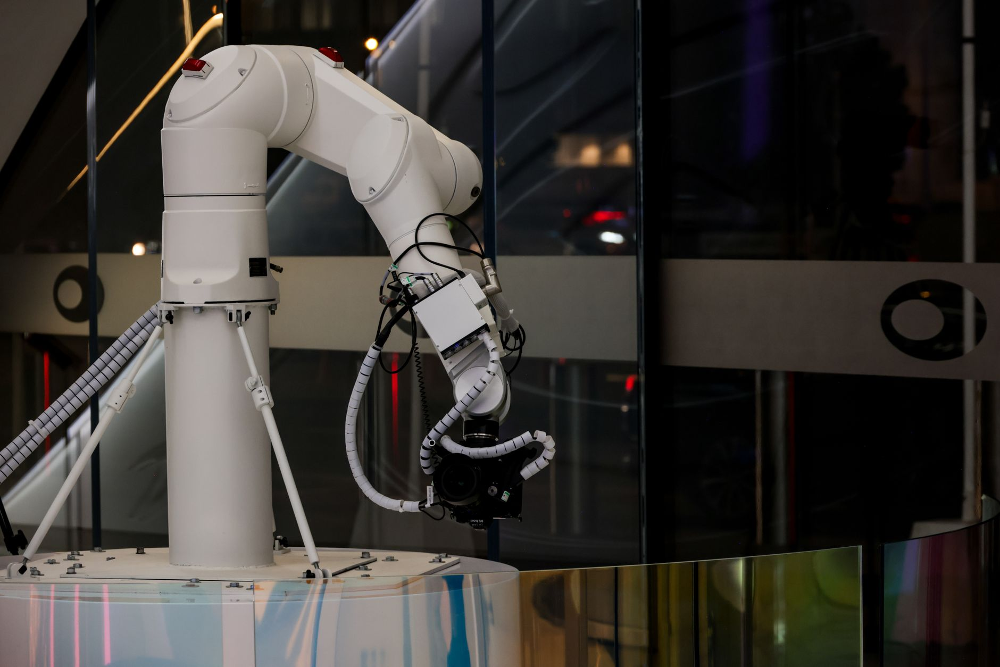

삼양사, 이온교환수지로 초순수 시장 정조준

삼양사가 반도체 공정에서 사용되는 초순수(UPW·Ultra Pure Water) 생산의 핵심 소재인 이온교환수지 사업을 본격 확대하며 매출 1,200억 원 달성이라는 야심 찬 목표를 공개했다. 이온교환수지는 물속의 이온 성분을 제거해 반도체 세정에 적합한 초고순도 물을 만드는 데 필수적인 기능성 소재다.
초순수는 반도체 웨이퍼 세정, 포토리소그래피 공정, 화학적 기계적 연마(CMP) 등 반도체 제조의 핵심 공정 전반에 걸쳐 대량으로 소비된다. 1리터 기준으로 일반 정제수보다 수십 배 높은 순도를 요구하며, 특히 3나노 이하 초미세 공정에서는 이온 농도 1ppb(10억분의 1) 이하 수준의 극초순수가 필요하다.
삼양사에 따르면 현재 국내 반도체용 이온교환수지 시장은 연간 수천억 원 규모이지만, 그 대부분을 일본의 오르가노, 미국의 다우케미칼 등 해외 업체가 장악하고 있다. 국산화율은 20% 내외에 불과해 공급망 취약성이 지적돼 왔으며, 삼양사는 이 시장을 국산화하겠다는 뚜렷한 목표를 갖고 있다.
삼양사는 자체 개발한 고성능 이온교환수지 제품의 성능을 글로벌 수준으로 끌어올리기 위해 수년간 R&D 투자를 지속해왔다. 최근 삼성전자, SK하이닉스 등 국내 주요 반도체 기업들의 현장 검증을 거쳐 품질 인증을 획득했으며, 공급 물량을 빠르게 늘려가고 있는 것으로 알려졌다.
이온교환수지의 핵심 경쟁력은 이온 제거 효율, 내구성, 오염 물질 용출 수준 등이다. 삼양사는 독자 개발한 특수 공중합 기술을 적용해 기존 수입 제품 대비 이온 제거 효율을 높이고 수명을 연장했다고 밝혔다. 이를 통해 반도체 기업 입장에서는 교체 주기가 길어져 운영 비용을 절감할 수 있다.
업계 관계자는 '반도체 공정이 미세화될수록 초순수의 품질 요구 수준도 높아지기 때문에, 이온교환수지 소재의 고성능화 경쟁이 더욱 치열해질 것'이라며 '삼양사가 기술력을 입증한다면 국내 시장에서 빠르게 점유율을 확대할 수 있을 것'이라고 전망했다.
삼양사의 이온교환수지 사업은 기존 식품·의약 분야 이온교환수지 사업의 기술 기반 위에서 발전했다. 식품·의약용과 반도체용은 요구 품질 수준이 다르지만, 기반 기술과 생산 공정이 유사해 삼양사가 상대적으로 빠른 시간 내에 반도체 소재 시장에 진입할 수 있었던 배경이다.
글로벌 시장에서는 반도체 공장의 물 사용량이 늘어나는 추세가 두드러진다. TSMC의 대만 공장 하나가 하루에 처리하는 초순수 규모는 수만 톤에 달하며, 삼성전자 평택 공장도 일일 수만 톤의 초순수를 필요로 한다. 이에 따라 글로벌 이온교환수지 수요도 연평균 8~10% 성장할 것으로 예측된다.
반도체 소재 국산화는 정부 차원에서도 정책적으로 지원하는 분야다. 산업통상자원부는 소부장(소재·부품·장비) 국산화 지원 사업을 통해 이온교환수지를 포함한 초순수 관련 소재 개발을 지원하고 있다. 삼양사는 이 같은 정책 지원을 활용해 추가적인 R&D 투자와 생산 설비 확충에 나서고 있다.
삼양사는 국내 시장 공략과 함께 해외 수출도 적극 추진하고 있다. 대만, 일본, 미국 등 주요 반도체 생산국의 파운드리 및 메모리 업체를 대상으로 제품 홍보와 샘플 공급을 진행 중이다. 해외 시장에서 레퍼런스를 확보할 경우 국내 매출 목표인 1,200억 원을 뛰어넘는 성과를 낼 수 있을 것으로 기대된다.
삼양사가 이온교환수지 시장에서 성공을 거둘 경우 국내 소재 산업에 미치는 파급 효과도 클 것으로 예상된다. 오랫동안 일본 의존도가 높았던 반도체 소재 분야에서 국산화 성공 사례가 늘어날수록 국내 소재 기업들의 기술 자립도가 높아지고 공급망 안보도 강화되는 선순환 구조가 만들어질 수 있다.
향후 삼양사는 이온교환수지에 이어 반도체 공정용 특수 케미컬 소재로도 사업 영역을 확장할 계획이다. 초순수 소재 시장에서 쌓은 기술력과 고객 신뢰를 바탕으로 반도체 소재 전문 기업으로서의 입지를 강화하겠다는 중장기 로드맵을 구체화하고 있는 것으로 알려졌다.